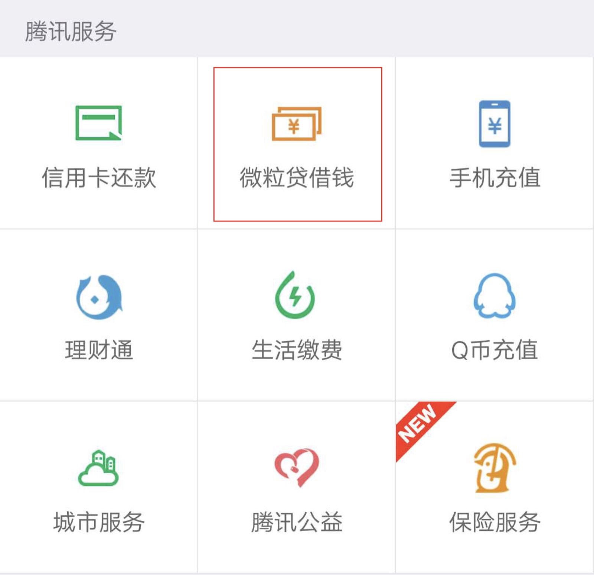
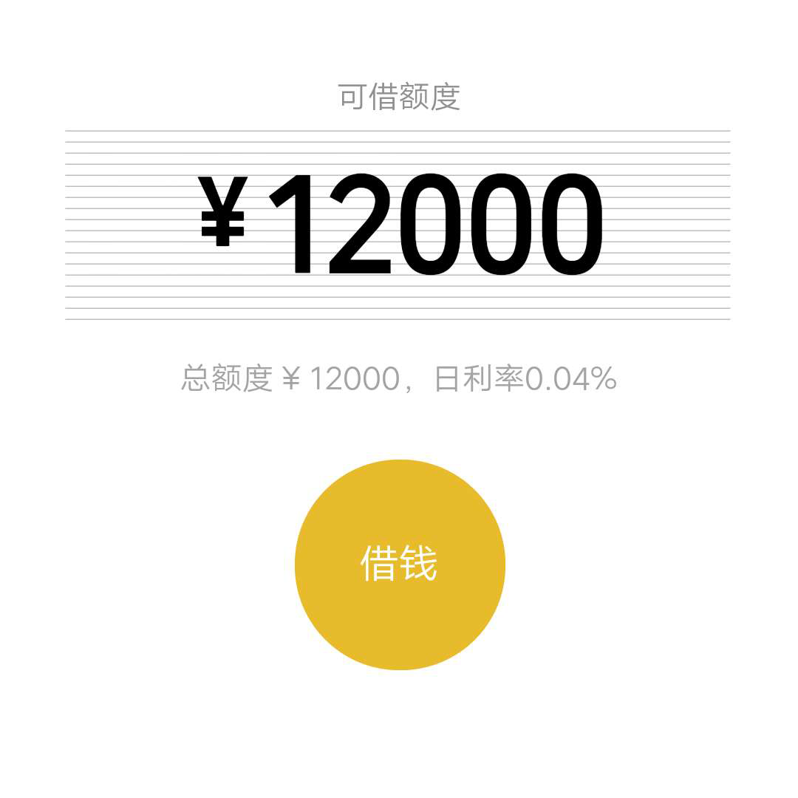
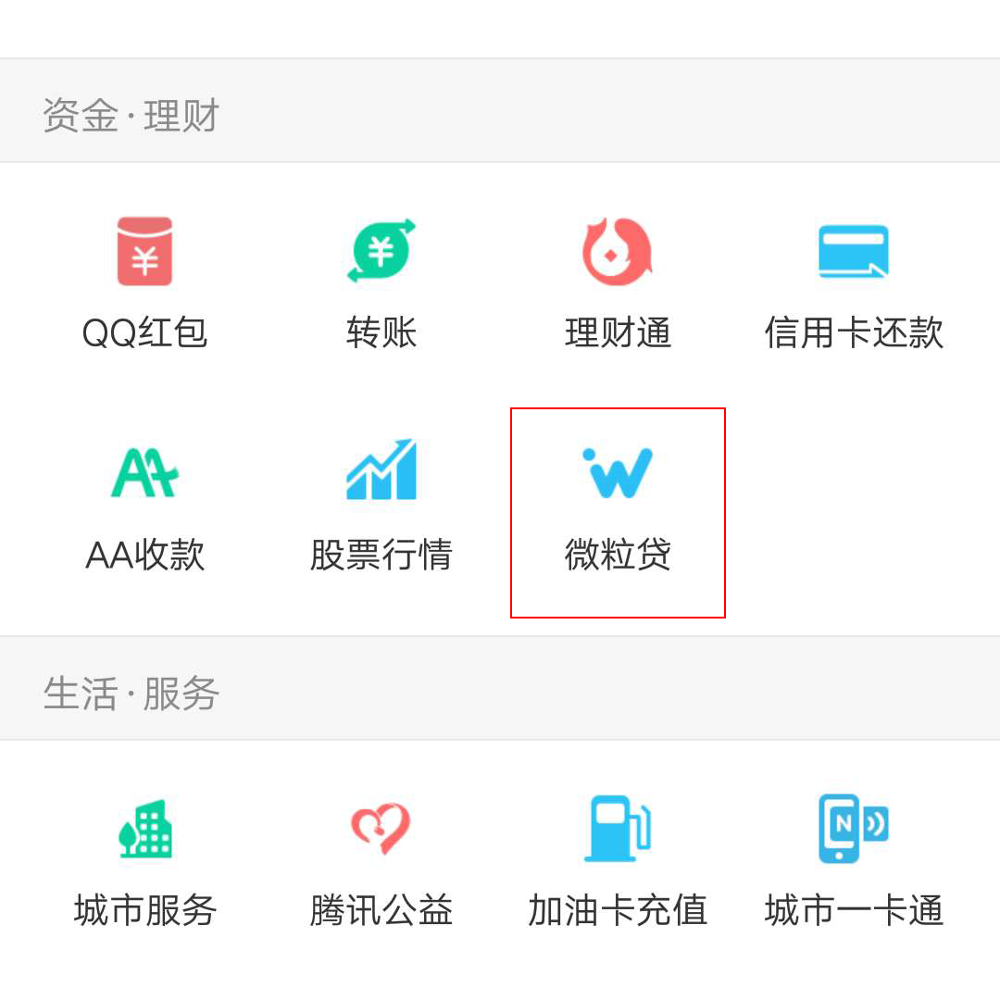
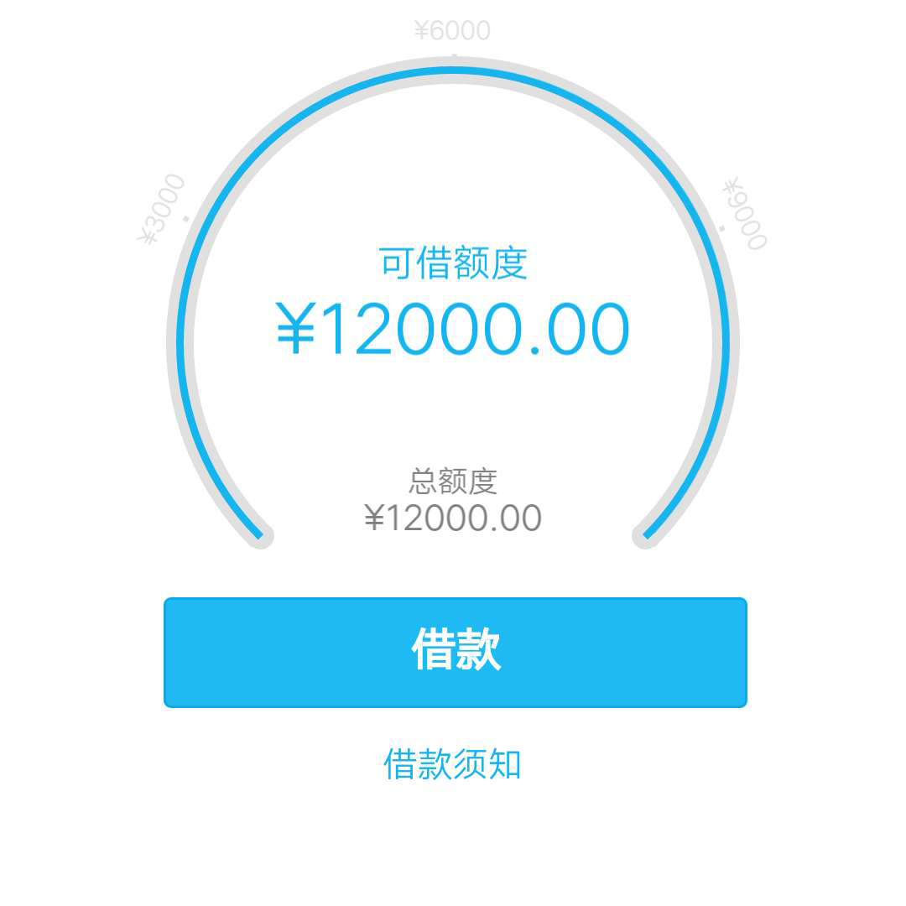

一、微信查看
1.打开微信-我-钱包，查看是否有"微粒贷借款"选项。若没有，则微粒贷选项选择"否";如果有，请点击该图图标。
2.进入微粒贷的详情页面，查看本人微粒贷额度。若额度等于0，则微粒贷选择选项选择"否";若额度大于0，微粒贷选项请选择"是",并填写微粒贷额度。
二、QQ查看
1.打开QQ-点击头像-QQ钱包-资金.理财，查看是否有“微粒贷借款”选项。若没有，则微粒贷选项选择“否”;如果有，请点击该图图标。
2.进入微粒贷的详情页面，查看本人微粒贷额度。若额度等于0，则微粒贷选择选项选择"否";若额度大于0，微粒贷选项请选择"是",并填写微粒贷额度。
